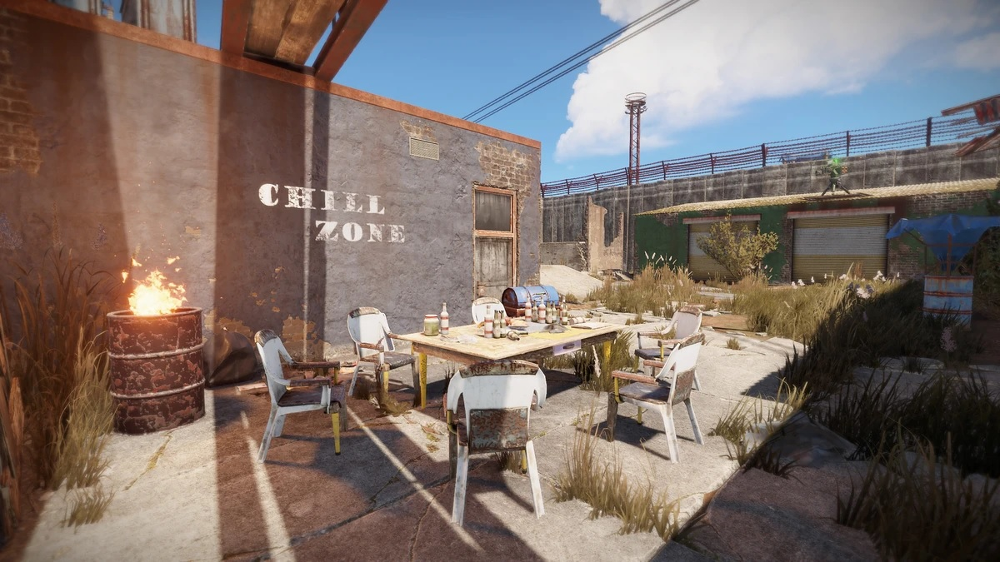
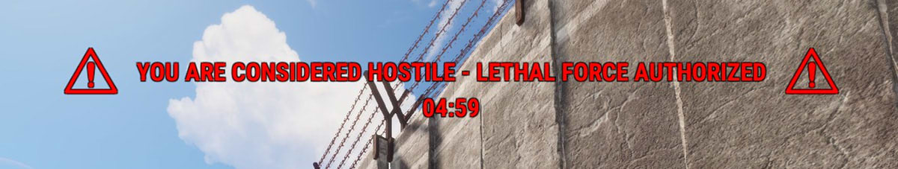
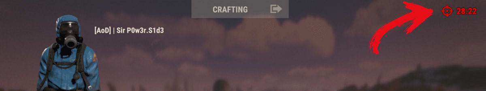

На данный момент есть много других сейф зон, но у них не такой большой функционал, как у города или бандитского лагеря.
Безопасная зона представляет из себя разрушенный город взятый под контроль организацией "Cobalt". Местность патрулируется вооруженными NPC и охраняется стационарными турелями. На территории безопасной зоны есть всё для начального развития.
Безопасная зона представляет из себя город на болоте взятый под контроль местными бандитами. Местность патрулируется вооруженными NPC и охраняется стационарными турелями. На территории безопасной зоны есть всё для начального развития.
Первое и главное правило безопасных зон — запрет на оружие. Если вы зашли на мирную территорию с оружием в руках, у вас будет 4 секунды на то, чтобы его снять. Вы не сможете снова его достать, пока не покинете сейф-зону. Если вы зашли на территорию сейф-зоны с оружием и не сняли его, то сначала будете предупреждены всплывающим оповещением. Затем вас атакует охрана в зеленых комбинезонах и будет открыт огонь из турелей. В инвентаре преступника отображается таймер нарушителя. Он показывает время, через которое вам будет позволено вернуться в безопасную зону. Кроме того, здесь запрещено спать. Если слипер проведет в сейф-зоне более 20 минут, он будет убит и снова отправится в точку спавна. Так что вы не сможете остаться на мирной территории перед выходом из игры, чтобы обезопасить лут в своем инвентаре.
 